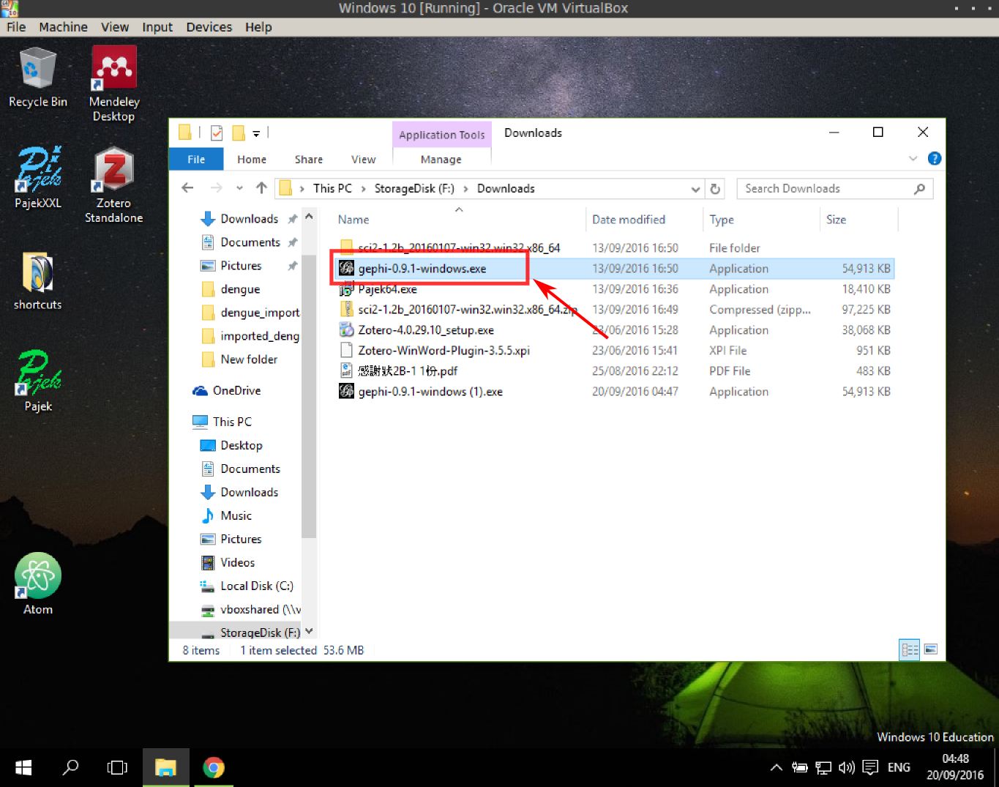

安裝 Gephi
以下以 Windows 爲例
安裝軟體
- 打開下載的安裝檔

- 選"是"
- 經過數個下一步(Next)之後，開始安裝
- 完成安裝
安裝 plugin
- 打開 Gephi 之後， Tools-->Plugins
- 打開第二分頁(Available Plugins)，在 GeoLayout 前面打勾，點 Install 安裝
- 也是一系列的下一步、接受，然後開始安裝，完成安裝，重啓 Gephi
更新 plugin
(Optional). 再一次，選擇第一個分頁(Updates)，打勾，然後按更新，經過下一步、接受之後完成更新，重啓 Gephi
完成準備工作